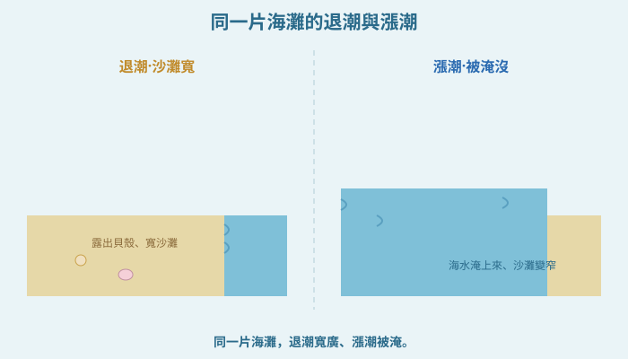
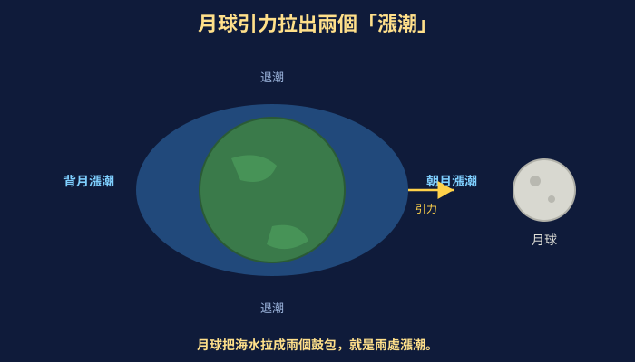
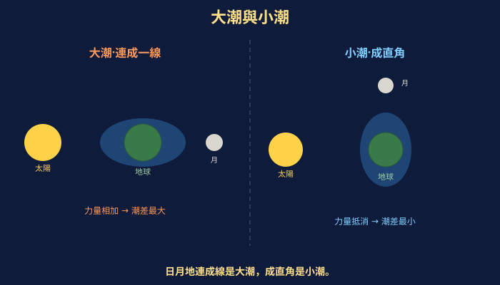
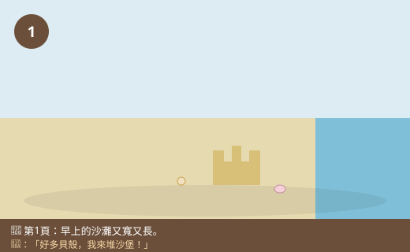
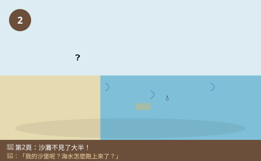
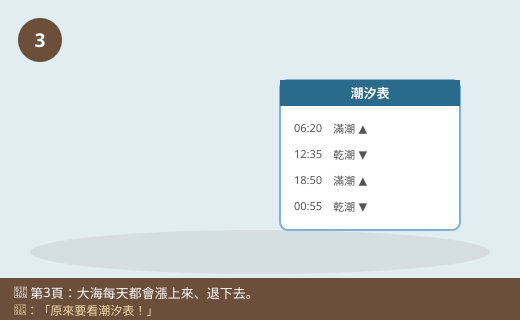
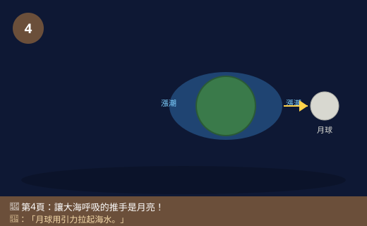
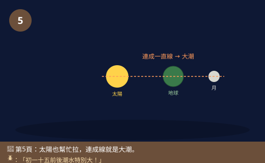
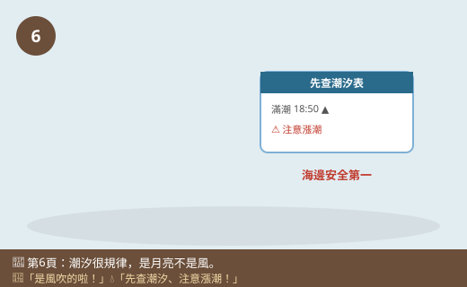

圖一（現象圖）：同一片海灘的漲潮與退潮

- 圖像目的
- 呈現漲潮與退潮時海岸線的變化。
- 圖中應出現的元素
- 左：退潮，沙灘寬、海水遠、露出貝殼；右：漲潮，海水淹上來、沙灘變窄；標「退潮」「漲潮」。
- 必須標示的科學概念
- 潮汐＝海水規律漲退，海岸線會移動。
- 圖說
- 「同一片海灘，退潮寬廣、漲潮被淹。」
- AI 繪圖提示詞
- 溫暖手繪繪本風，左退潮寬沙灘露貝殼、右漲潮海水淹上來，對比同一海灘。繁體中文，白底。
- 避免畫錯的提醒
- 兩圖是同一片海灘、只有水位不同；退潮沙灘寬、漲潮窄。
💡 早上還能在沙灘上撿貝殼，下午同一個地方卻被海水淹沒了！大海好像會「呼吸」——一漲一退。這一切，居然和天上的月亮有關？
| 適合年級 | 國小六年級 |
|---|---|
| 可銜接年級 | 六年級 → 國中地球的運動、萬有引力 |
| 主題分類 | 地表、岩石與自然資源（海洋與天文） |
| 核心概念 | 潮汐是海水規律的漲退；主要由月球（和太陽）的引力造成；一天約兩次 |
| 關鍵詞 | 潮汐、漲潮、退潮、月球、引力、潮間帶 |
| 可銜接的國中概念 | 萬有引力、月球與地球、天體運動 |
| 建議閱讀時間 | 約 18 分鐘 |
| 適合搭配的課堂活動 | 查潮汐表、觀察潮間帶、模擬月球引力拉海水 |
暑假，小狐同學跟家人到海邊玩。早上剛到的時候，沙灘又寬又長，他在濕濕的沙地上撿了好多漂亮的貝殼，還堆了一座大沙堡，離海水遠遠的。玩累了就回去吃午餐。下午再回到海邊——「咦？我的沙堡呢？」小狐同學傻眼了，早上那片寬廣的沙灘不見了大半，海水已經淹到他們早上坐的地方，沙堡早就被淹沒沖走了！
「海水怎麼自己跑上來了？」小狐同學百思不解，「早上明明退得那麼遠，下午就漲上來，是有人把水倒進海裡嗎？」他問了旁邊釣魚的老爺爺。老爺爺笑著說：「小朋友，這叫『漲潮』跟『退潮』啦！大海每天都會這樣漲上來、退下去，很有規律的。我們釣魚的人都要看『潮汐表』，才知道什麼時候海水會漲、什麼時候會退。」
小狐同學把這件事記在心裡，回家問了黑熊老師：「老師，海水為什麼會自己漲上來又退下去？而且還這麼規律？」黑熊老師拿出地球和月亮的模型，神祕地說：「你一定想不到——讓大海『呼吸』的幕後推手，是天上那顆月亮！」
「月亮？月亮離我們那麼遠，怎麼可能讓海水動起來？」小狐同學完全不敢相信。黑熊老師點點頭：「這正是最神奇的地方。月亮雖然遠，但它有一種看不見的力量——引力，會輕輕地『拉』住地球上的海水。地球這麼一轉，被拉高的地方就漲潮、其他地方就退潮。今天我們就來揭開潮汐的祕密，看看月亮是怎麼指揮大海一漲一退的！」
黑熊老師，海水為什麼會漲潮和退潮？
主要是月球的引力造成的。月球會用一種看不見的力量「拉」地球上的海水。面對月球那一側的海水被拉得鼓起來，那裡就漲潮；同時地球另一側也會鼓起來（也是漲潮）。地球一邊自轉，海邊的地方時而轉到「鼓起來」的位置（漲潮），時而轉到「凹下去」的位置（退潮），就一漲一退了。
月球離我們那麼遠，力量還能拉到海水喔？
對！這種力量叫引力——所有東西之間都有互相吸引的力量，越重、越近，力量越大。月球很大，雖然遠，但它的引力還是足以輕輕拉動整片海洋。海水是液體、可以流動，所以被拉得動；陸地是固體，動得很少，我們才會看到海水在漲退。
補一個關鍵冷知識！其實太陽也會用引力拉海水，只是太陽超級遠，拉力比月球小一些。當太陽、月亮、地球排成一直線時（農曆初一、十五附近），太陽和月亮的力量「合作」，潮水漲得特別高、退得特別低，叫大潮；當它們的方向互相垂直時（農曆初七、八、廿二、廿三附近），力量「互相抵消」一部分，潮差較小，叫小潮。
難怪釣魚爺爺要看潮汐表！那一天會漲退幾次呢？
大部分地方一天大約有兩次漲潮、兩次退潮。因為地球自轉一圈約一天，海水的兩個「鼓起來」的地方，會輪流轉到同一個海邊。所以潮汐很有規律、可以預測，人們才能事先做出潮汐表。
潮汐對我們的生活有什麼影響嗎？
影響可大了！漁民要看潮汐出海、進港；挖蛤蜊、討海要趁退潮；海邊的潮間帶（漲退潮之間的地帶）住著螃蟹、彈塗魚、藤壺等許多生物；還有人用潮水的漲退來發電（潮汐發電）。不過也要小心——去海邊玩一定要先查潮汐、注意漲潮，才不會像你的沙堡一樣被海水追上來，甚至受困危險。
海邊安全最重要！去潮間帶觀察或玩水，一定要先查好潮汐表、跟緊大人，注意漲潮時間，看到海水開始上漲就要往岸上退，絕對不要為了撿東西跑到太遠的礁石上，以免被漲潮困住。也要小心濕滑的礁石。
哼，海水會漲退，一定是風把海水吹上來的啦！風大的時候浪就大，海水當然被吹到岸上，跟月亮一點關係都沒有！
迷思怪獸，這要更正囉！風確實會造成海浪、也會影響海水，但那是一陣一陣、不規律的。而潮汐是非常規律的——每天固定大約兩次漲退、和月亮的位置對得上、還能提前很久預測做成潮汐表。如果是風造成的，怎麼可能這麼準時、這麼規律？可見潮汐的幕後推手是月球（和太陽）的引力，不是風。風頂多讓浪變大，改變不了潮汐的規律節奏。
原來大海的呼吸是月亮在指揮！下次去海邊我一定先查潮汐表。
潮汐就是海水規律地漲上來（漲潮）和退下去（退潮），大部分地方一天大約兩次。造成潮汐的主要推手是月球的引力——月球用看不見的力量「拉」地球上的海水，面對月球那一側和相反那一側的海水被拉得鼓起來（漲潮），地球一邊自轉，海邊就輪流經過漲潮和退潮。太陽也會拉海水（力量小一點）；當太陽、月亮、地球排成一直線時潮差最大（大潮）。潮汐很規律、可以預測，所以有潮汐表。去海邊一定要先查潮汐、注意漲潮，才安全。
潮汐是海水在月球與太陽引力作用下的週期性升降。月球引力對地球各處的作用不同，使朝向月球側與背向月球側的海水都向外隆起，形成兩個「漲潮」隆起帶；地球自轉使同一地點約每天通過這兩個隆起帶，故多數海岸一日約兩次高潮、兩次低潮。月球影響大於太陽（月近太遠）。日、地、月接近共線（朔、望）時引潮力加強，潮差最大（大潮）；成直角（上下弦）時部分抵消，潮差最小（小潮）。潮汐可預測（潮汐表），影響航運、漁業、潮間帶生態與潮汐發電。與潮汐相關的是引力而非風；風與氣壓造成的是不規律的波浪與暴潮。
潮汐源於萬有引力與慣性：月球對地球各質點的引力隨距離不同而有差異（引潮力/潮汐力），在朝月與背月兩側產生海水隆起。地球自轉導致半日潮為主（週期約 12 小時 25 分，與月球視運動相關，故每天潮時延後約 50 分鐘）。太陽引潮力約為月球的46%；朔望時日月引潮力疊加為大潮，弦時抵消為小潮。實際潮汐還受海盆形狀、海岸地形、科氏力等影響（如某些地區為全日潮或混合潮）。此連結國中「地球的運動」「萬有引力」，並延伸潮汐能等永續能源議題。









| 適合年級 | 六年級 |
|---|---|
| 材料 | 中央氣象署潮汐預報（網路或報紙）、方格紙、彩色筆、（模擬用）大碗、水、一顆磁鐵或想像的「月球」、紀錄表 |
觀察的日期（不同農曆日／連續幾天）。
一天高低潮的次數、時間、潮差大小。
同一個地點、同樣的資料來源與判讀方式。
| 日期（含農曆） | 高潮次數 | 低潮次數 | 最大潮差 | 是大潮還小潮 |
|---|---|---|---|---|
你會發現：大部分海邊一天有約兩次高潮、兩次低潮；每天的高潮時間會規律地往後延約 50 分鐘（因為和月球的位置有關）；農曆初一、十五前後潮差特別大（大潮），初七、八、廿二、廿三前後潮差較小（小潮）。這些規律都和月球（與太陽）的位置對得起來，證明潮汐是月球和太陽的引力造成的、而且非常規律可預測——這也是為什麼人們能事先做出潮汐表。（如果是風造成的，就不可能這麼準時規律。）
⚠️ 安全提醒：這個活動主要是查資料與畫圖，很安全。但若真的要去海邊或潮間帶觀察，一定要有大人陪同、先查好潮汐表，注意漲潮時間，看到海水開始上漲就往岸邊退，絕不跑到太遠的礁石或沙洲以免被漲潮困住；礁石濕滑要小心跌倒，遠離大浪與危險水域。用水做模擬時把濺出的水擦乾，避免滑倒。
👾 迷思說法：海水漲退是「風把海水吹上來」造成的。
為什麼容易誤解：風大時浪大，海水看起來被吹到岸上。
✅ 正確說法：風會造成不規律的海浪，但潮汐是非常規律的（每天約兩次、和月亮位置對得上、能提前預測）。潮汐的主因是月球和太陽的引力，不是風。風頂多讓浪變大，改變不了潮汐的規律節奏。
可以怎麼驗證：看潮汐表，潮汐準時規律；風卻時有時無，兩者不同。
👾 迷思說法：月球離地球那麼遠，不可能影響海水。
為什麼容易誤解：覺得那麼遠的東西碰不到海水。
✅ 正確說法：月球靠引力（看不見的吸引力）影響海水，不需要碰到。月球很大，即使遠，引力仍足以輕輕拉動會流動的海水，形成潮汐。
可以怎麼驗證：潮汐的規律和月球的位置、農曆對得起來，證明是月球在影響。
👾 迷思說法：只有面對月球那一側會漲潮，另一側都是退潮。
為什麼容易誤解：直覺以為只有被拉的那一面會鼓起來。
✅ 正確說法：其實朝向月球和背對月球「兩側」都會漲潮，形成兩個海水隆起。所以地球自轉一圈，同一地點會經過兩次漲潮，一天約兩次漲退。
可以怎麼驗證：潮汐表顯示大部分海岸一天約有兩次高潮，符合「兩側都漲」的模型。
👾 迷思說法：全世界的潮汐時間都一樣。
為什麼容易誤解：覺得潮汐是同一顆月亮造成的，應該同步。
✅ 正確說法：不同地點漲退潮的時間不一樣，因為地球在自轉，各地轉到「隆起帶」的時間不同；海岸地形也會影響。所以每個地方都有自己的潮汐表。
可以怎麼驗證：比較不同海邊城市的潮汐表，高潮時間各不相同。
👾 迷思說法：漲潮退潮沒什麼，去海邊玩不用管它。
為什麼容易誤解：覺得海水漲一點退一點沒關係。
✅ 正確說法：潮汐攸關安全！漲潮可能很快淹沒沙灘、沙洲或礁石，把人困住造成危險。去海邊一定要先查潮汐表、注意漲潮時間、跟緊大人，看到水上漲就往岸邊退。
可以怎麼驗證：新聞常有遊客因不看潮汐、受困沙洲或礁石而受困的案例，提醒我們要注意。
1. 造成海水漲潮、退潮的主要原因是？
(A) 風把海水吹來吹去 (B) 月球（和太陽）的引力 (C) 海底火山 (D) 魚在游動
答案：B。主要由月球引力（太陽次之）造成。
2. 大部分的海邊，一天大約會有幾次漲潮？
(A) 一次 (B) 兩次 (C) 五次 (D) 十次
答案：B。約兩次高潮、兩次低潮。
3. 月球的引力會使地球上的海水如何？
(A) 只有朝月一側鼓起 (B) 朝月和背月「兩側」都鼓起（漲潮）(C) 完全不動 (D) 全部退到海底
答案：B。兩側都隆起，形成兩處漲潮。
4. 什麼時候會出現潮差最大的「大潮」？
(A) 太陽、月亮、地球排成一直線時（農曆初一、十五前後）(B) 下雨天 (C) 沒有月亮時 (D) 颱風天
答案：A。日月引力疊加，潮差最大。
5. 關於去海邊的安全，下列何者正確？
(A) 不用管潮汐，隨便玩 (B) 先查潮汐表、注意漲潮、跟緊大人 (C) 退潮時跑到最遠的礁石才好玩 (D) 看到漲潮還要往海裡走
答案：B。查潮汐、注意漲潮、跟緊大人最安全。
1. 為什麼說「大海會呼吸」？請用漲潮和退潮解釋，並說出主要是什麼造成的。
因為海水會規律地漲上來（漲潮）又退下去（退潮），一天大約兩次，就像大海在一呼一吸。這主要是月球（和太陽）的引力造成的：引力把海水拉得鼓起來，地球一邊自轉，海邊就輪流經過漲潮和退潮。
2. 為什麼潮汐可以「事先預測」，做成潮汐表？這和「風造成」的說法有什麼不同？
因為潮汐是由月球和太陽的位置（引力）造成的，而月球、太陽的運行很規律、可以計算，所以潮汐也很規律、能提前預測做成潮汐表。如果潮汐是風造成的，風時有時無、不規律，就不可能這麼準時、這麼規律地預測出來。這正說明潮汐的主因是引力而不是風。
3. 為什麼去海邊玩，一定要先查潮汐表、注意漲潮時間？
因為漲潮時海水會上漲、淹沒原本露出的沙灘、沙洲或礁石，如果沒注意，可能被上漲的海水困住、來不及回岸上，非常危險。先查潮汐表就能知道什麼時候會漲潮，安排安全的活動時間、及早往岸邊退，避免受困。
1. 小狐查了潮汐表，發現「今天高潮在早上 6:20，明天高潮卻變成早上 7:10」，每天都往後延一點。你覺得這個規律和天上的什麼有關？為什麼潮汐會跟著它跑？
和「月球」有關。因為潮汐主要跟著月球的位置走，而月球每天在天空出現的時間會往後延大約 50 分鐘（月球繞地球運行造成），所以每天的高潮時間也跟著往後延約 50 分鐘。這個規律正好對應月球的運行，再次證明潮汐是月球引力造成的，而不是隨機或風造成的。
2. 有人提議在潮差很大的海灣蓋「潮汐發電廠」，利用海水漲退來發電。你覺得這種發電方式有什麼優點？可能要考慮哪些缺點或影響？
優點：潮汐很規律、可預測，是穩定又「用不完」的再生能源，發電時不燒煤、不排碳，比較環保。要考慮的缺點或影響：建潮汐電廠的水壩/水閘可能改變海灣的水流和潮間帶環境，影響螃蟹、彈塗魚等生物的棲地與漁業；建造成本高、地點受限（要潮差夠大的海灣）；也可能影響船隻進出。所以要在能源效益和生態保護之間仔細評估。（能連結再生能源與生態永續即可。）
| 向度 | 待加強（1） | 通過（2） | 優秀（3） |
|---|---|---|---|
| 概念理解 | 認為潮汐是風造成 | 知道潮汐由月球引力造成、一日約兩次 | 能以兩側隆起、日月位置解釋大潮小潮與延後 |
| 探究技能 | 無法判讀潮汐表 | 能查判潮汐表並畫圖找規律 | 能連結農曆與潮差、提出可驗證推論 |
| 安全與態度 | 忽視海邊潮汐安全 | 知道先查潮汐、注意漲潮 | 主動宣導安全並關注潮間帶生態與潮汐能 |
| 檢核項目 | 結果 | 備註 |
|---|---|---|
| 科學概念是否正確 | ✅ | 潮汐由月球（與太陽）引力造成、兩側隆起、一日約兩次、大潮小潮、每日延後約50分，敘述正確。 |
| 是否符合年級理解程度 | ✅ | 六年級以海邊沙灘經驗、潮汐表判讀切入，定性為主。 |
| 是否有錯誤或過度簡化的比喻 | ✅ | 「大海呼吸」為引起動機，已澄清為引力造成的規律漲退。 |
| 是否清楚區分觀察、推論與解釋 | ✅ | 由沙灘變化觀察、潮汐表規律推論，連結月球引力解釋。 |
| 圖像提示詞是否可能造成誤解 | ✅ | 已提醒同一海灘水位變化、兩側都漲潮、大潮共線小潮垂直。 |
| 實驗是否安全 | ✅ | 以查表畫圖為主；海邊活動強調查潮汐、注意漲潮、大人陪同，安全。 |
| 是否需要補充資料來源 | ✅ | 對應 INd-Ⅲ-3 與探究學習表現；引潮力與萬有引力屬國中，見教師補充。潮汐預報可查中央氣象署。 |
| 是否適合轉成 HTML 網頁 | ✅ | 結構完整，含互動測驗與摺疊區。 |